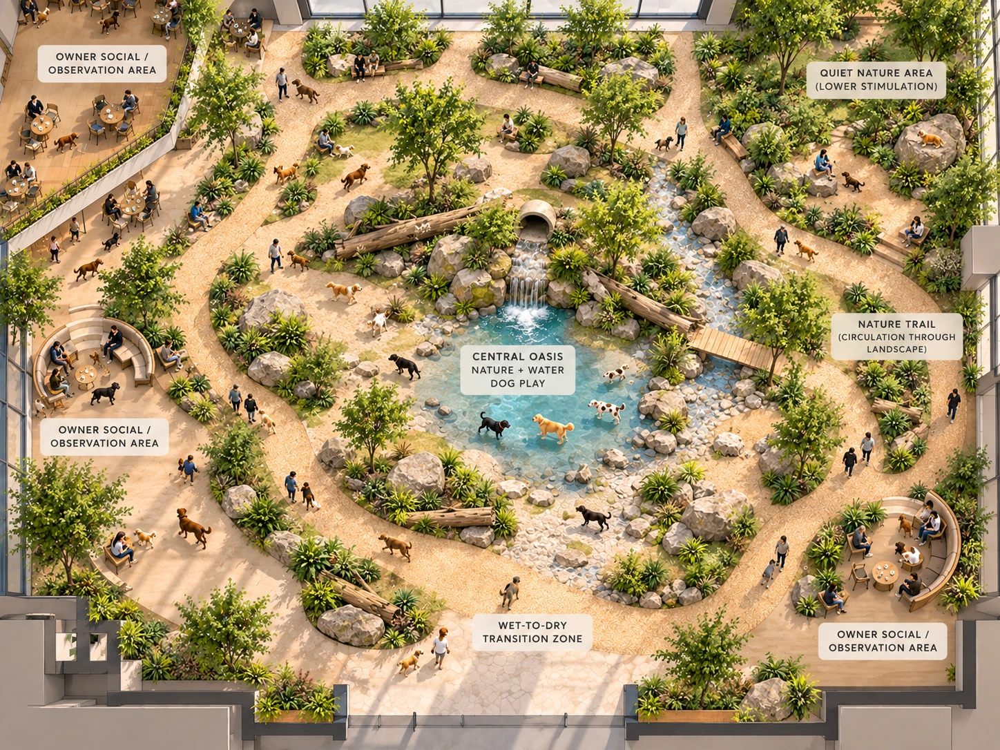
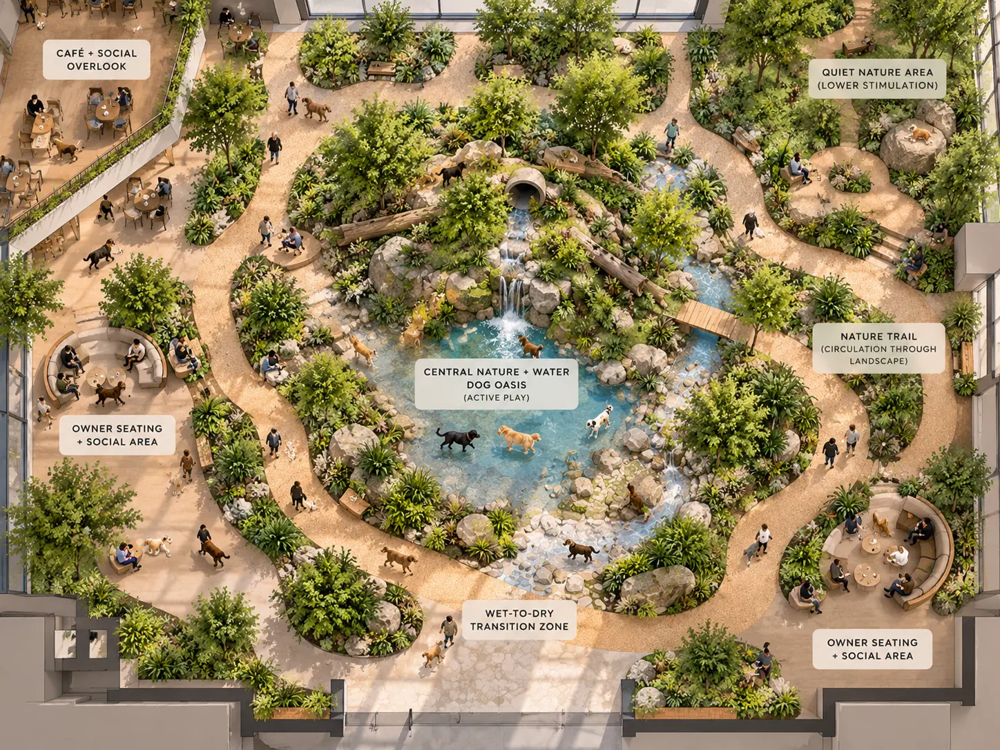
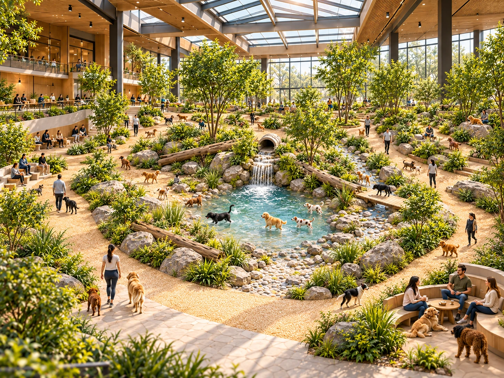
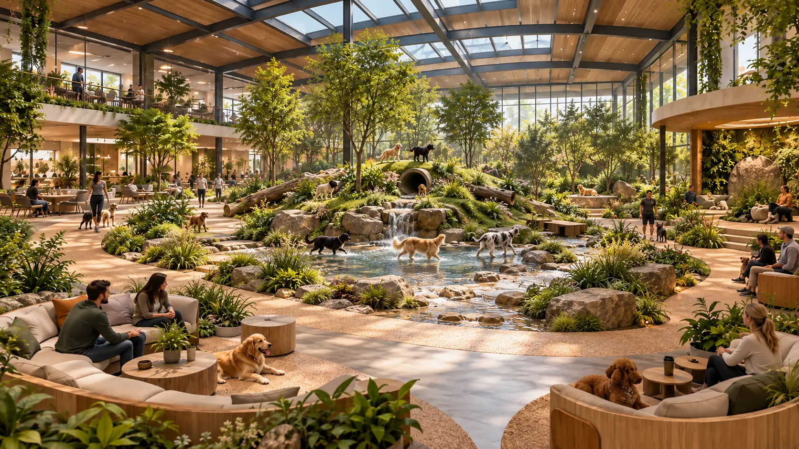

Conceptual 3D environment · 2026
Future Indoor Dog Park
A biophilic indoor environment designed for about 30 dogs and 20 people. The concept combines active play, water, walking, rest, and clear owner sightlines in one connected space.

Design goal
Play, calm, and visibility
The goal was to create an indoor park that still feels connected to nature. Warm wood, daylight, stone, planting, and water soften the large structure.
The layout gives dogs different levels of activity while owners can sit, socialize, and observe the space from several points.
Spatial plan
One continuous nature trail
The path connects the Central Oasis, social seating, a quiet area, and the wet-to-dry transition zone.


Key views
Testing atmosphere and scale


Reflection
The plan became stronger when every activity connected to the trail.
The Central Oasis gives the environment a clear focal point. The surrounding path organizes movement and makes it easier to move between active play, social areas, water, and quiet space. Future development would test materials, drainage, safety, and accessibility in more detail.
This is a conceptual portfolio project and not a verified construction drawing.